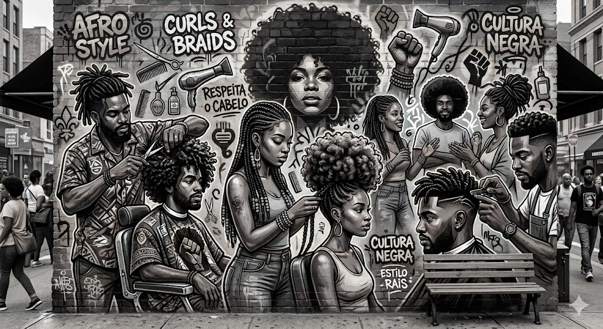

Formação
Compartilhar técnica fortalece o ofício e abre caminhos.
Textura, repertório e confiança.



Arte, troca e próxima geração.
Nova geraçãoOfício Autoestima
Autoestima Expressão
Expressão Presença
PresençaCompartilhar técnica fortalece o ofício e abre caminhos.
A arte da rua também encontra lugar dentro da nossa casa.
Um visual alinhado pode mudar como você ocupa uma sala.